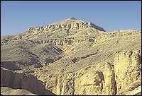

|
The deserts that surrounded ancient Egypt were barren places full of sand dunes, mountains and cliffs. The deserts were dangerous and forbidding places, and it was difficult to cross them. They provided a natural barrier between ancient Egypt and invading foreign armies.

The only people who lived in the desert were nomadic people (the Bedu). They did not farm the land, so they did not need the rich soil that was on the banks of the Nile.
|